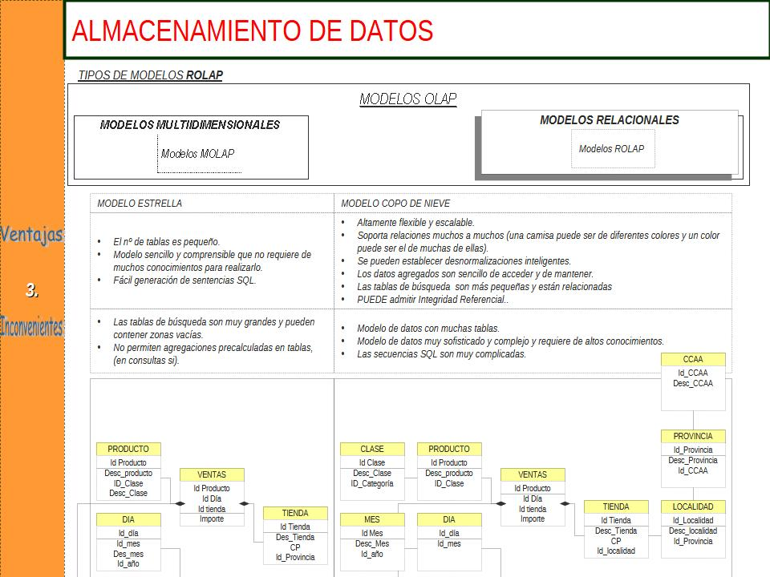

Ficheros
Bases de datos
Code and Next Steps
Para comprender bien el concepto de ficheros, comenzaremos por ver como trabajar con un fichero ".csv" en python.
Primero vamos a importar la librería "pandas".
import pandas as pd
Vamos a seguir con el ejemplo utilizado durante todo el curso anterior "Classes in Python". No se si habréis observado que hemos elaborado una clase llamada "User" que a su vez tiene 3 subclases "UserAdmin", "UserUpdaters" y "UserInvoicers".
Hasta ahora hemos cargado los usuarios y hemos consultado sobre ellos, pero lo cierto es que en la vida real, hacemos primero el registro en una aplicación y eso normalmente queda guardado en alguna parte, o en un fichero, o en una tabla de datos, que al final es lo que viene a ser un fichero.
Bien, imaginemos que nosotros tenemos un fichero csv llamado "users.csv", y que ahí guardaremos todos nuestros datos. Nuestro fichero tendrá los siguientes campos o variables (o columnas si estáis habituados a excel):
"user_id" "user_name" "user_login" "user_id_type" "user_type" "user_permissions" "user_secure_word"
Vamos a ver ahora como modificamos la función register en nuestras subclases de "User":
class UserAdmin(Users):
def register(self, current_user_type):
self.user_data = {
"user_name" : self.user_name,
"user_login": self._user_login,
"user_id_type": "1" ,
"user_type": "Administrator",
"user_permissions": ['Management', "Updater", "Seller"],
"user_secure_word": "help --admin"
}
df_users = pd.read_csv(f'{path_root}/data/users.csv')
df_users.loc[len(df_users)] = [len(df_users),self.user_name, self._user_login, "1","Administrator", ['Management', "Updater", "Seller"], "help --admin" ]
df_users.to_csv(f'{path_root}/data/users.csv', header = True, index = False)
@property
def user_login(self):
return self._user_login
Hemos abierto el fichero csv. Le hemos dicho que nos incluya en la primera línea vacia len(df_users) los valores correspondientes a este usuario. Lo cual siendo el administrador, tiene toda la lógica que pueda introducir todos los usuarios que quiera.
!!! Habréis observado que podemos introducir las mismas 3 líneas en cada tipo de usuario restante con los parámetros indicados en cada caso y entonces, podríamos añadir los registros que quisiéramos, ya que no establecemos ningún tipo de control para nada: podrían introducirse datos repetidos, podrían introducir los usuarios datos del administrador,.. y eso no nos interesa.
Una base de datos es una recopilación organizada de información o datos estructurados, que normalmente se almacena en un sistema informático.
Normalmente, una base de datos está controlada por un sistema de gestión de bases de datos (DBMS). En conjunto, los datos y el DBMS, junto con las aplicaciones asociadas a ellos, reciben el nombre de sistema de bases de datos, abreviado normalmente a simplemente base de datos.
Los datos de los tipos más comunes de bases de datos en funcionamiento actualmente se suelen utilizar como estructuras de filas y columnas en una serie de tablas para aumentar la eficacia del procesamiento y la consulta de datos.
Tanto las bases de datos como lso ficherosMicrosoft Excel) y como los ficheros csv son modos cómodos de almacenar información.
Las principales diferencias entre los dos son:
Las hojas de cálculo se diseñaron originalmente para un usuario y sus características así lo reflejan. Son perfectas para un único usuario o para un pequeño número de usuarios que no necesiten hacer una gran manipulación de datos increíblemente complicada.
Las bases de datos, por otro lado, están diseñadas para contener recopilaciones mucho más grandes de información organizada, a veces en cantidades masivas. Las bases de datos permiten que muchos usuarios accedan y consulten los datos de forma rápida y segura al mismo tiempo mediante una lógica y un lenguaje muy complejos.
Las bases de datos han evolucionado radicalemente desde su inicio en la década de 1960:
Las bases de datos de navegación, como la base de datos jerárquica (que se basaba en un modelo de árbol y permitía una relación de uno a muchos)
La base de datos de red (un modelo más flexible que permitía relaciones múltiples), eran los sistemas originales que se utilizaban para almacenar y manipular datos.
Como ventaja sencillos, pero como inconvenite, estos primeros sistemas eran inflexibles.
En la década de 1980, se hicieron populares las bases de datos relacionales, seguidas de las bases de datos orientadas a objetos en la década de 1990.
Más recientemente, las bases de datos NoSQL surgieron como respuesta al crecimiento de Internet y la necesidad de acelerar la velocidad y el procesamiento de los datos no estructurados. Hoy en día, las bases de datos en la nube y las bases de datos de autogestión están abriendo nuevos horizontes en lo que respecta a la forma en la que se recopilan, se almacenan, se gestionan y se utilizan los datos.
Existen muchos tipos diferentes de bases de datos. La mejor base de datos para una organización específica depende de cómo pretenda la organización utilizar los datos.
Vamos a comentar tres de ellas.
Las bases de datos relacionales se hicieron predominantes en la década de 1980. Los elementos de una base de datos relacional se organizan como un conjunto de tablas con columnas y filas. La tecnología de bases de datos relacionales proporciona la forma más eficiente y flexible de acceder a información estructurada.

Un repositorio central de datos, un data warehouse es un tipo de base de datos diseñado específicamente para consultas y análisis rápidos.
Una base de datos NoSQL, o base de datos no relacional, permite almacenar y manipular datos no estructurados y semiestructurados (a diferencia de una base de datos relacional, que define cómo se deben componer todos los datos insertados en la base de datos). Las bases de datos NoSQL se hicieron populares a medida que las aplicaciones web se volvían más comunes y complejas.
Pero existen muchas otros tipos:
MongoDB es un sistema de base de datos NoSQL orientado a documentos de código abierto , que en lugar de guardar los datos en tablas lo hace en estructuras de datos BSON (similar a JSON) con un esquema dinámico.
MongoDB es una base de datos orientada a documentos. Esto quiere decir que en lugar de guardar los datos en registros, guarda los datos en documentos. Estos documentos son almacenados en BSON, que es una representación binaria de JSON.
Esto representa una de las diferencias más importantes con respecto a las bases de datos relacionales. Y resulta que no es que no es necesario seguir un esquema. Los documentos de una misma colección - concepto similar a una tabla de una base de datos relacional -, pueden tener esquemas diferentes
MongoDB describe su arquitectura como FUENTE: https://www.mongodb.com/es/what-is-mongodb
MongoDB almacena datos en documentos flexibles similares a JSON, por lo que los campos pueden variar entre documentos y la estructura de datos puede cambiarse con el tiempo
El modelo de documento se asigna a los objetos en el código de su aplicación para facilitar el trabajo con los datos
Las consultas ad hoc, la indexación y la agregación en tiempo real ofrecen maneras potentes de acceder a los datos y analizarlos
MongoDB es una base de datos distribuida en su núcleo, por lo que la alta disponibilidad, la escalabilidad horizontal y la distribución geográfica están integradas y son fáciles de usar
MongoDB es de uso gratuito. Las versiones lanzadas antes del 16 de octubre de 2018 se publican bajo licencia AGPL. Todas las versiones posteriores al 16 de octubre de 2018, incluidos los parches lanzados para versiones anteriores, se publican bajo".
Vamos a desarrollar el proyeto datawarehouse, incluyendo: